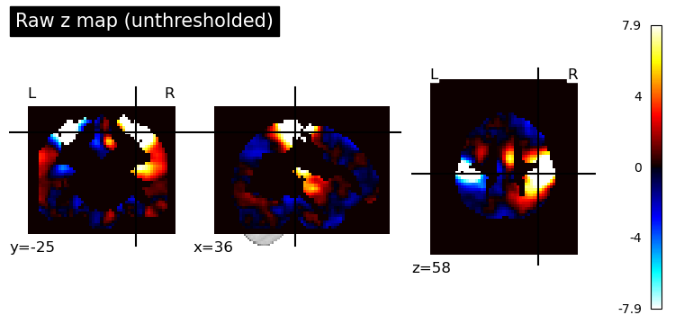
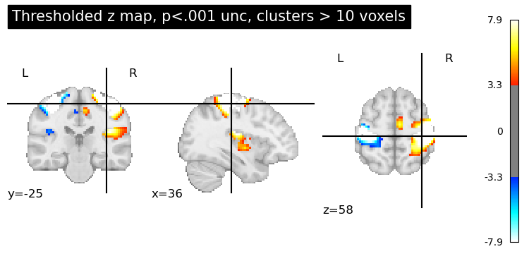
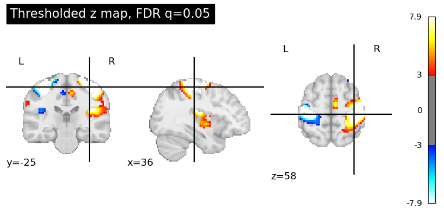
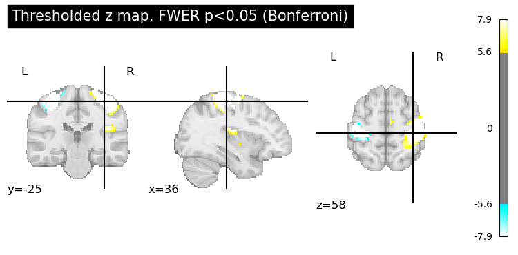
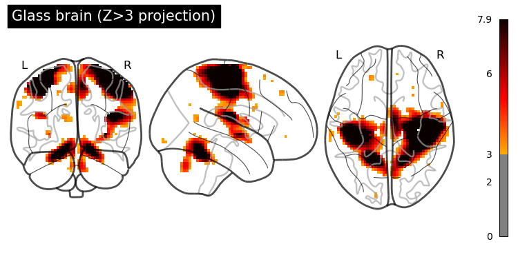
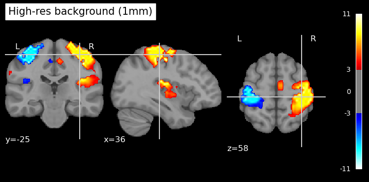

This tutorial assumes you have precomputed second-level fMRI statistical maps.
1. Background: Statistical thresholding in fMRI analysis
Common thresholding methods used in fMRI group analysis:
- Uncorrected voxel-wise thresholding:
This is a simple threshold based on a p-value (e.g., p < 0.001) applied to each voxel independently, without any multiple-comparison correction. It controls the false positive rate per voxel but not across the whole brain. Consequently, in a typical 100,000-voxel brain map, a threshold of p<0.05 could yield around 5,000 false positives just by chance. Uncorrected thresholds (such as p < 0.001) are more stringent but can still result in dozens of false-positive voxels in whole-brain analyses. This method is typically used only as an initial visualization or for defining clusters to facilitate further correction.
- FWER correction (Family-Wise Error Rate):
This controls the probability of any false positives in the entire map (the “family” of tests). A common FWER method is Bonferroni correction, which sets the voxel-wise p-threshold to α/N (α = desired overall alpha, N = number of voxels). For example, for α=0.05 and N=100,000 voxels, the threshold becomes p < 0.0000005. This guarantees a very low chance of any false positive voxel, but is extremely conservative for fMRI because voxel tests are not truly independent (neighboring voxels’ signals are correlated). Such over-correction can drastically reduce power (increase false negatives). In practice, FWER is often applied via Random Field Theory-based methods (as in SPM) or Bonferroni when valid. FWER-corrected results are voxel-wise significant at the given α (e.g., p<0.05 FWE means each reported voxel is significant at that corrected level).
- FDR correction (False Discovery Rate):
FDR controls the expected proportion of false positives among the voxels deemed significant. For instance, an FDR threshold q=0.05 means that on average 5% of the active voxels could be false positives. This is less conservative than FWER — it allows some false positives as long as the rate is low — and thus has higher sensitivity in detecting true effects. FDR adapts to the data: If there are many true activations, the threshold becomes more lenient; if there are few activations, it becomes stricter (in the limit of no signal, the FDR threshold equals Bonferroni). FDR is a voxel-wise correction in the sense that it provides a threshold for voxels, but it controls a global metric (proportion of false discoveries rather than the chance of any false voxel).
- Cluster-wise inference:
This approach uses the concept that true activations tend to occur in contiguous clusters of voxels, rather than isolated single voxels. Instead of testing each voxel independently, we first apply a cluster-defining threshold (e.g., p<0.001 uncorrected at voxel level) to get clusters, then test the clusters for significance based on their size (extent) or mass. The probability of observing a cluster of a given size under null (noise) conditions is estimated (via Random Field Theory or permutation simulations ), and clusters are deemed significant if they exceed a size threshold corresponding to (for example) p<0.05 FWER at the cluster level. In practice, this means small isolated blobs are likely discarded as noise, while larger contiguous areas survive. Cluster-wise correction thus controls FWER across clusters, not individual voxels. It is more sensitive than strict voxel-wise FWER, at the cost of not pinpointing which voxels in a big cluster are truly “active” (we trust that at least some are). Voxel-wise vs. cluster-wise: Voxel-wise methods (like Bonferroni or FDR) apply criteria to individual voxels’ values. Cluster-wise methods focus on the extent of activation and require a minimum cluster size for significance. Both approaches can be used in tandem (e.g., a voxel-wise threshold to define clusters, then cluster extent threshold for correction).
In short, uncorrected thresholds are liberal (risking false positives), FWER (Bonferroni/RFT) is very strict (minimizes any false positive at cost of missing true effects), FDR offers a balance by controlling false discovery proportion, and cluster-wise methods improve sensitivity by leveraging spatial extent at the cost of localization specificity.
2. Examples
Let’s use sample data motor task activation from nilearn to illustrate these concepts.
from nilearn import datasets
# Load an example statistical map (motor task activation)
stat_img = datasets.load_sample_motor_activation_image()
print("Sample Z map path:", stat_img)
# load a standard brain atlas (MNI template mask)
brain_mask = datasets.load_mni152_brain_mask()
print("MNI152 template path:", brain_mask)3. Applying Thresholding Strategies with Nilearn
Nilearn offers convenient functions to threshold statistical images:
- nilearn.image.threshold_img: for simple thresholding by a given value or percentile.
- nilearn.glm.threshold_stats_img: for thresholding based on statistical criteria (p-values) with options for FPR, FDR, Bonferroni, and cluster size.
We will use both to illustrate uncorrected vs corrected thresholds.
3.1 Uncorrected thresholding (voxel-wise p-value)
Let’s apply a voxel-wise uncorrected p<0.001 threshold. For Z-statistics, p<0.001 (one-tailed) corresponds to Z > ~3.09. We’ll use a slightly stricter Z > 3.29 (≈ p<0.0005 two-tailed) as in many studies, and also remove tiny clusters (cluster size < 10 voxels) to focus on substantive blobs:
from nilearn.image import threshold_img
# Threshold the Z map at |Z|>3.29 (p<0.001 approx), remove clusters < 10 voxels
threshold_value = 3.29
uncorr_map = threshold_img(stat_img, threshold=threshold_value,
two_sided=True, cluster_threshold=10,
mask_img=brain_mask)The result uncorr_map is a new image where all voxels with |Z| ≤ 3.29 are zeroed out (i.e., not significant at p<0.001), and only clusters with >10 voxels are retained. This procedure is essentially what one would get by an uncorrected p<0.001 threshold in a Z-stat image with a 10-voxel extent cutoff.
3.2 Using threshold_stats_img for advanced corrections
Now we’ll use threshold_stats_img to apply FDR and FWER corrections. This function computes the appropriate Z threshold for a given α, using the image data:
from nilearn.glm import threshold_stats_img
# 1) Uncorrected (FPR) at p<0.001, with cluster >10 (should match the manual threshold above)
thresholded_map_fpr, thresh_fpr = threshold_stats_img(stat_img,
mask_img=brain_mask, alpha=0.001, height_control='fpr',
two_sided=True, cluster_threshold=10)
print("Uncorrected p<0.001 Z threshold =", round(thresh_fpr, 2))
# 2) FDR correction at q=0.05
thresholded_map_fdr, thresh_fdr = threshold_stats_img(stat_img,
mask_img=brain_mask,alpha=0.05, height_control='fdr')
print("FDR=0.05 Z threshold =", round(thresh_fdr, 2))
# 3) Bonferroni correction at p<0.05
thresholded_map_fwer, thresh_fwer = threshold_stats_img(stat_img,
mask_img=brain_mask,alpha=0.05, height_control='bonferroni')
print("Bonferroni p<0.05 Z threshold =", round(thresh_fwer, 2))Output: Uncorrected p<0.001 Z threshold = 3.29 FDR=0.05 Z threshold = 3.0 Bonferroni p<0.05 Z threshold = 5.56
The above output values mean:
- p<0.001 (uncorrected) corresponds to Z > ~3.29 (as expected) .
- FDR 0.05 yielded a threshold 3, which is much lower (more inclusive) – many voxels can be included while keeping false discovery rate at 5% .
- Bonferroni 0.05 gave Z > 5.56, a very high bar (more exclusive) – only the strongest peaks survive when controlling any false positive at 5% .
4. Visualizing Statistical Maps: Plotting in Nilearn
Nilearn’s plotting module provides several ways to visualize 3D brain maps:
- plot_stat_map: Display the map as colored blobs overlaid on an anatomical brain (default background is an MNI template). This shows orthogonal slices by default.
- plot_glass_brain: Display a transparent “glass brain” maximal-intensity projection – useful for an overview of activation spread without anatomical detail.
- view_img: Interactive viewer for Jupyter notebooks, allowing you to scroll through slices.
We will use each of these. First, let’s plot the unthresholded Z map to see all activations (positive and negative):
from nilearn import plotting
# Plot the raw (unthresholded) Z map
display = plotting.plot_stat_map(stat_img, title="Raw z map (unthresholded)",
threshold=None, colorbar=True) By default, it will choose cut coordinates that show some of the highest activations. We can extract those coordinates to reuse for other plots (so that all plots show the same slices for easier comparison):
cut_coords = display.cut_coords # save the chosen cut coordinates
print("Cut coordinates chosen:", cut_coords)Now, plot the thresholded results side by side. We’ll use the same cut coordinates for consistency:
# 1. Uncorrected p<.001 (with clusters > 10)
plotting.plot_stat_map(thresholded_map_fpr, cut_coords=cut_coords,
threshold=thresh_fpr,
title="Thresholded z map, p<.001 unc, clusters > 10 voxels")
# 2. FDR-corrected (q=0.05)
plotting.plot_stat_map(thresholded_map_fdr, cut_coords=cut_coords,
threshold=thresh_fdr,
title="Thresholded z map, FDR q=0.05")
# 3. FWER-corrected (Bonferroni p<.05)
plotting.plot_stat_map(thresholded_map_fwer, cut_coords=cut_coords,
threshold=thresh_fwer,
title="Thresholded z map, FWER p<0.05 (Bonferroni)")
plotting.show()   Voxel-wise uncorrected threshold p<0.001 (Z>3.29), with clusters smaller than 10 voxels removed. Many activation clusters are visible, as no multiple-comparison correction was applied beyond the initial threshold — we expect some false positives among these. False Discovery Rate (FDR) corrected at q=0.05. The threshold is lower (Z≈3), which shows similar output as the first option, but somehow more voxels are colored, including some weaker activations that were cut off in the p<0.001 map. FDR allows a controlled proportion (5%) of these voxels to be false positives, thus it detects more widespread activity than FWER. Family-Wise Error Rate (FWER) correction at p<0.05 (Bonferroni). Only the most significant clusters remain. The required Z≈4.9 is very high, so all but the strongest signals (e.g., primary motor cortex) are gone. This map has the fewest activations, reflecting a very strict control of false positives (no more than 5% chance of any false voxel)
4.1 Glass Brain Views
Sometimes we want a quick look at the overall pattern of activations without anatomical details. Glass brain plots show a brain outline with projections of the active regions. This is useful for checking where clusters are generally located (especially subcortical vs cortical, bilateral vs unilateral).
# Glass brain plot of the unthresholded map (thresholding lightly for visibility)
plotting.plot_glass_brain(stat_img, threshold=3.0, colorbar=True,
title="Glass brain (Z>3 projection)")
Glass brain view of the activation map. This projects the supra-threshold voxels in each view (frontal, lateral, axial) as if we’re looking through a transparent brain. It provides an overview of cluster locations without structural context.
We can also adjust the glass brain view:
display_modecan be set tol,r,lzry, etc., to show specific hemispheric projections (e.g., only left, only right, or multiple panels) .black_bg=Truecan be used for a dark background (useful if you plan to overlay on slides with dark background, for example).
4.2 Interactive Viewing
For an interactive exploration, Nilearn offers view_img, which can be very handy in Jupyter notebooks. It lets you scroll through slices and adjust threshold dynamically in a widget or as an HTML file:
view = plotting.view_img(stat_img, threshold=3.0, cmap='cold_hot')
view # This will display an interactive viewer in JupyterYou can also specify cut_coords=[x, y, z] to center the view, or use view_img(stat_img, threshold=3.0).open_in_browser() to pop it out in a web browser. The interactive view supports features like dragging slice sliders and toggling the colorbar.
(If working in a static environment, you can instead save the widget to an HTML file: view.save_as_html('interactive_map.html').)
Customizing Plots (Cuts, Colormaps, Backgrounds, Overlays)
Nilearn plotting functions have many options to customize the figure for publication-quality output. Here are some common customizations:
- Cut coordinates and display modes: By default plot_stat_map shows 3 orthogonal cuts through a point of high activation. You can control this:
cut_coords=(x, y, z)will center the cuts at specific coordinates (in MNI space, usually).- display_mode can be ‘ortho’ (default), ‘x’, ‘y’, ‘z’ (single-axis views), or combinations like ‘xz’, ‘yz’, ‘xy’, or ‘mosaic’ for many slices. For example, to show multiple axial slices, you could do display_mode=‘z’, cut_coords=7 (seven evenly spaced axial slices).
- For a montage of slices in a grid, use
display_mode='mosaic'and specify how many slices in each direction via a tuple. E.g.,display_mode='mosaic', cut_coords=(7, 5, 5)would create a mosaic with 7 slices in z, 5 in x, 5 in y directions. - Colormaps and colorbars: The default colormap for
plot_stat_mapis a diverging red-blue (‘cold_hot’) good for showing positive vs negative deviations. You can set the cmap parameter to any matplotlib colormap (e.g., ‘viridis’, ‘coolwarm’, ‘RdBu_r’, etc.) to suit your data. If your map has only positive values (e.g., all Z scores positive for an activation contrast), you might use a sequential colormap and setvmin=0orsymmetric_cbar=Falseso that the color range isn’t forced to be symmetrical around zero. The colorbar argument (True/False) toggles the side color scale bar. You can also format the colorbar numbers via cbar_tick_format (for example, “%.2g” or “%i”). - Background image: By default, plot_stat_map uses a standard anatomical (MNI152) background image behind the activations. You can supply your own anatomical image via the bg_img parameter (for example, an average T1 image of the group or an anatomical scan of a representative subject). If you set
bg_img=None, no underlay is used – the activation blobs will be plotted on a blank background (which can be black or white). The parameter black_bg=True will set the background to black (and also automatically switch the colormap text to white for contrast) – this is often useful for glass brains or if you prefer a dark theme. Conversely, for a white background (which is default whenblack_bg=Falseor ‘auto’), ensure your colormap shows up well on light gray/white. - Adding overlays/contours: You might want to overlay additional information, such as ROI boundaries or a second map’s contours, on your plot. Nilearn’s plotting returns a display object that has methods like add_overlay and add_contours.
- Figure size and resolution: For publication, you’ll often need high-resolution figures. You can control the figure size by creating a matplotlib figure first and passing it to the plotting function (via the figure or axes parameter)
To save a plot, you can either use the output_file argument in plotting functions (which accepts a filename and will save at default resolution) , or save the display object. For instance:
display.savefig('activation_map_highres.png', dpi=300)
High-resolution tip: If your activation map is low-resolution (blurry or blocky), you can resample it to a higher resolution template before plotting. For example, load a 1mm MNI template and resample the stat map to it.
from nilearn.image import resample_to_img
template = datasets.load_mni152_template(resolution=1) # 1mm MNI brain
resampled_stat = resample_to_img(thresholded_map_fdr, template) # resample stat map to 1mm
plotting.plot_stat_map(resampled_stat, bg_img=template, threshold=thresh_fdr,
cut_coords=cut_coords, title="High-res background (1mm)")
Finally, remember that the interactive viewer (from view_img) can be saved to HTML as mentioned, which is useful for sharing results with colleagues who can’t run the code. Static images can be saved using the methods above. By organizing the code and explanations as shown, you can easily adapt this notebook to visualize your own fMRI results with publication-quality figures.
# plot image using view_img and open in a browser
view = plotting.view_img(resampled_stat, bg_img=template, threshold=thresh_fdr,
cut_coords=cut_coords, cmap='cold_hot').open_in_browser()With the opened image in browser, you can save it as an HTML file for sharing or further exploration. This interactive viewer allows you to scroll through slices, adjust thresholds, and visualize the activation patterns dynamically.
Further resources:
-
Nilearn documentation on plotting: see the Visualization user guide and the plot_stat_map and plot_glass_brain function references for more details.
-
Nilearn example “Statistical testing of a second-level analysis” for a complete pipeline of group analysis and thresholding .
-
Andy’s Brain Book appendix on multiple comparisons for an accessible explanation of these statistical concepts.